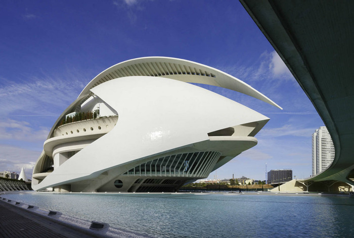
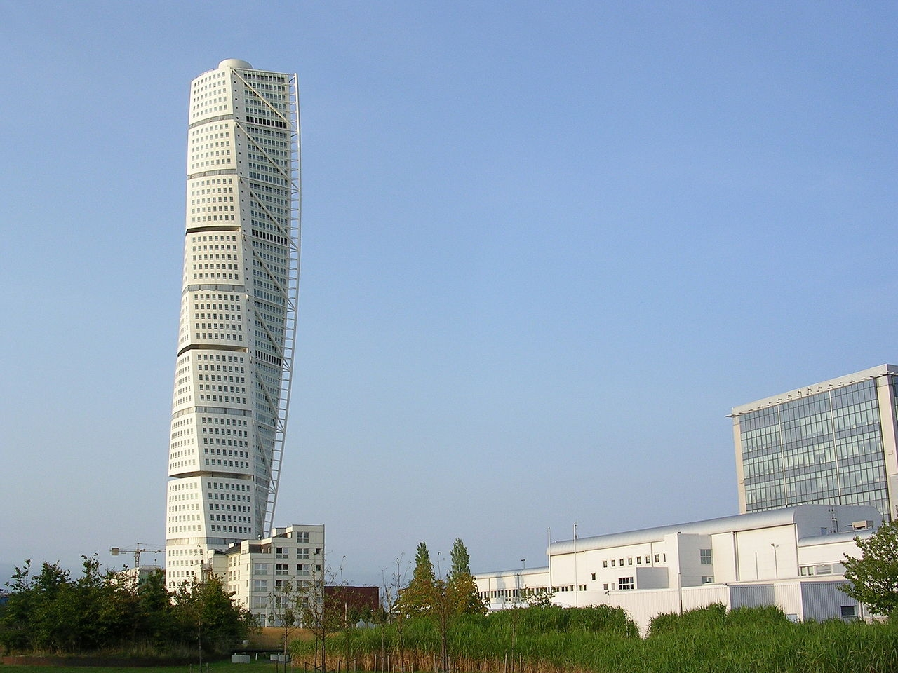
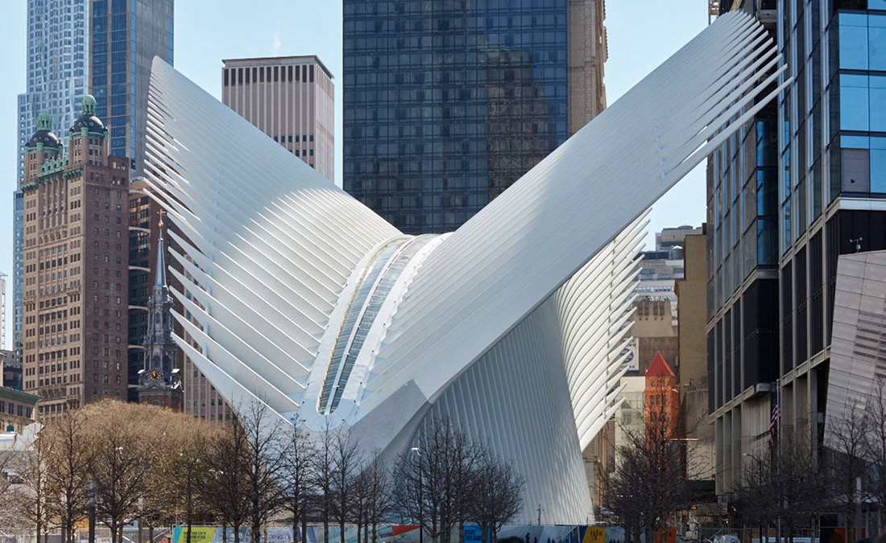

Творчество великого мастера
Сантьяго Калатрава — испанский архитектор и скульптор, автор многих футуристических построек в разных странах мира. Его работы сочетают в себе архитектуру, инженерию и скульптуру, создавая неповторимый стиль.
Знаменитые проекты

Город искусств и наук
Валенсия, Испания

Поворачивающийся торс
Мальмё, Швеция

Транспортный узел ВТЦ
Нью-Йорк, США
"Архитектура — это искусство, которое вы можете обойти вокруг. Это искусство, которое вы можете пережить." — Сантьяго Калатрава